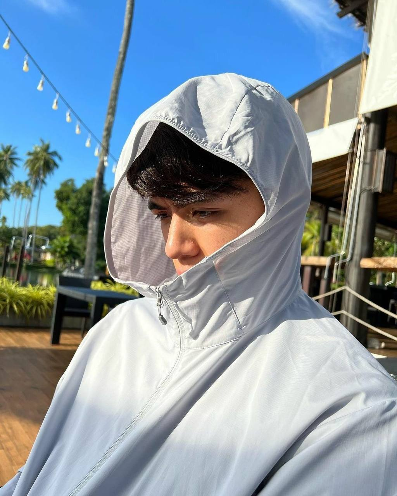
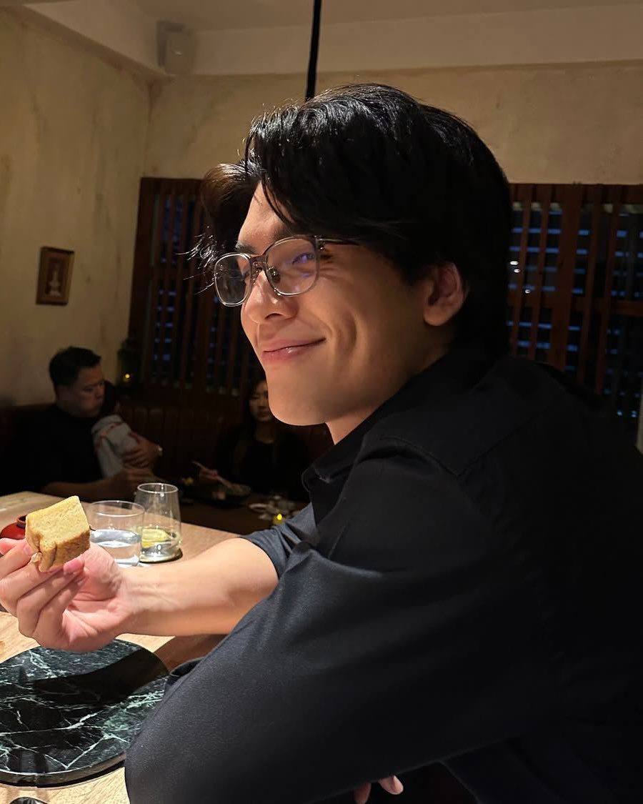
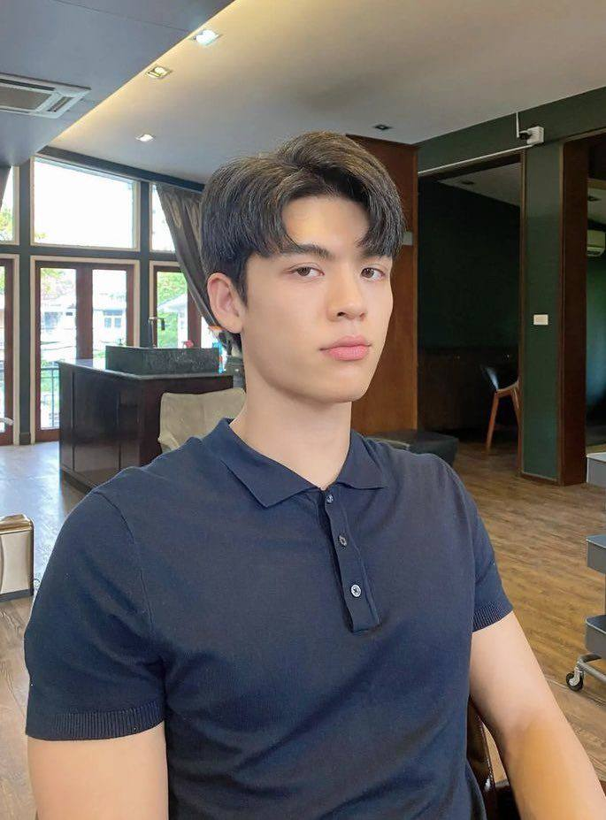
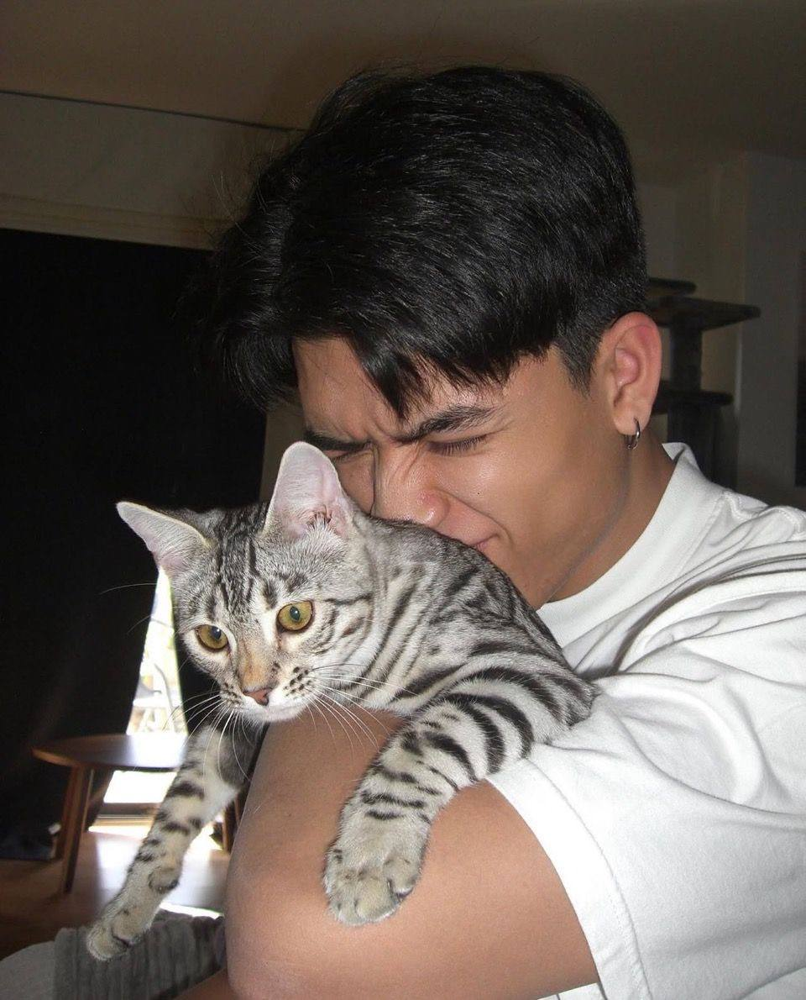

For My Favorite Person 🤍
Four months down, forever to go.




Four months filled with laughter, random conversations, love, and countless beautiful moments.
Happy mensive yang ke empat ya, pacarku yang paling ndutt.
Nggak kerasa ya, ternyata kita udah bareng-bareng selama empat bulan. Mungkin buat orang lain, empat bulan itu sebentar. Tapi buat aku, empat bulan ini udah ngasih banyak banget cerita buat kita berdua.
Dari tawa, obrolan random, sampai hal-hal kecil yang bikin aku senyum sendiri setiap kali inget kamu. Aneh nggak sih? Setiap ada chat dari kamu, mood aku langsung jadi baik dan rasanya hari yang biasa aja berubah jadi lebih indah.
Makasih ya ndutt, karena sampai hari ini kamu masih milih buat tetap ada di samping aku terus. Makasih udah sabar sama sifat aku, sama mood aku yang kadang naik turun, dan sama semua kurang lebihnya aku.
Aku tahu aku belum jadi orang yang sempurna buat kamu, tapi aku bakal terus belajar buat jadi seseorang yang bisa bikin kamu nyaman, tenang, dan bahagia setiap hari.
Kamu harus inget ya, selalu ada aku yang nunggu cerita dari kamu setiap harinya. Mau cerita yang seru, yang bikin kesel, yang bikin capek, atau hal kecil sekalipun, aku bakal selalu seneng dengerinnya.
Aku suka semua tentang kamu. Cara kamu ngobrol, cara kamu peduli, cara kamu dewasa buat ngadepin aku yang kadang masih childish, dan cara kamu bikin hari-hari aku yang biasa aja jadi terasa lebih seru.
Bahkan hal kecil yang kamu lakuin sering berhasil bikin aku salting banget dan ngerasa kalau ternyata aku seberuntung itu punya kamu.
Semoga di mensive yang ke empat ini kita masih sama-sama saling jaga, saling ngerti, dan saling milih satu sama lain.
Kalau nanti ada masalah, ayo kita hadapin bareng ya. Kamu bilang komunikasi itu kuncinya, dan aku setuju banget.
Jadi jangan capek buat cerita ke aku, jangan capek buat ngadepin semua sifat aku, dan jangan takut buat jujur sama apa yang kamu rasain.
Karena aku selalu pengen jadi tempat pulang yang nyaman buat kamu.
Aku nggak minta hubungan kita selalu sempurna di mata orang lain. Aku cuma pengen kita tetap bertahan, sama-sama tumbuh, dan nggak gampang nyerah cuma karena keadaan.
Selama kamu masih mau jalanin semua ini sama aku, aku juga bakal terus ada, terus milih kamu, dan terus nemenin kamu setiap harinya.
Sekali lagi, happy 4th mensive, achilku sayang.
Makasih ya sayang, udah hadir di hidup aku dan bikin empat bulan ini terasa begitu berarti.
Semoga bulan-bulan berikutnya kita masih bisa ngerayain hari yang sama dengan senyum yang lebih besar, cerita yang lebih banyak, dan rasa sayang yang terus bertambah setiap harinya.
Aku sayang kamu, hari ini, besok, dan semoga untuk waktu yang sangat lama.
I love you more than anything. 🤍
And I can't wait to write the next chapter together.